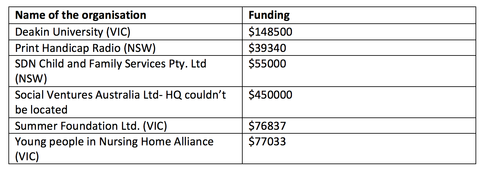

Of the 29 OECD countries the world over, Australia ranks 21st out of 29 in terms of employment opportunities for the disabled. The generous disability support schemes of the Nordic European countries like Sweden and Switzerland have often been contrasted with that of Australia, relatively less generous and often termed the ‘liberal disability program’. When the National Disability Insurance Scheme Act 2013 (NDIS Act) came into force in the year 2013, Australians for the first time had access to a disability support system that operated on a national level. Previously, under the state funded disability schemes, the support funds were a one-size-fits-all fixed dollar amount. The present scheme is based on insurance principles that entail early planning for support that will be entailed over the course of a lifetime. The trial run began in July 2013 and culminated in June 2016. By means of this research, I attempt to track the progress of NDIS through its trial phase before it fully rolled out in July last year.
Service providers across Australia work to fulfil the objectives of NDIS by providing clients with specially tailored services that can help the specially abled live more ‘ordinary’ lives. With 1350 service providers in its first year of trial, NDIS now works with 3519 service providers across the country.
Total funding to NDIS has grown from $148.8 million at the start of the trial to $2.4 billion by the end of June 2016, a 16-fold increase.
The average annual compensation to participants of the scheme has hovered around $35,000 for the three-year period ending 2015-16. The number of participants though, has grown by about 5 times over the same period. NDIS now provides services to 35,695 participants.
Inclusion of the differently abled in community life extends to NDIS’s own organisational structure as well. The double bar graph below depicts state-wise percentages of staff that was disables over a 2-year period (2013-14 to 2014-15). Northern Territory lead the way during both years. The National Disability Insurance Agency set a target of 15% for the same, which was surpassed last year when figure notched an impressive 16%.
Community inclusion was one of the 3 main programs detailed in 2015-16 NDIS report. It aims to fund not for profit organisations that help make communities more inclusive by assisting differently abled people in leading more 'ordinary' lives'. The heat map attempts to depict the most inclusive communities on a state-wise basis.
The input data for the heat map includes organisations that though headquartered in the state that they’ve been classified under, operate on a pan Australia level. To not distort the state-wise community engagement levels of disabled people in the states where such organisations are located, listed below are all the not-for-profits and community organisations that operate on a national level.
